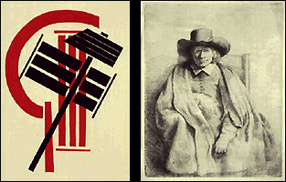

The Minneapolis Institute of Arts
Main Menu ~ Permanent Collection List ~ Interactive Museum Maps ~ Back ~ Next
Prints and Drawings
 (c) 41k
Discover the astonishing variety of graphic art in displays featuring some of the Institute's 45,000 original prints, 4,000 drawings, watercolors, and pastels, and 1,000 artist's books. Prints and drawings are included in some special exhibitions and permanent galleries.You can also make an appointment to view works in the Herschel V. Jones Print Study Room by calling (612) 870-3105.